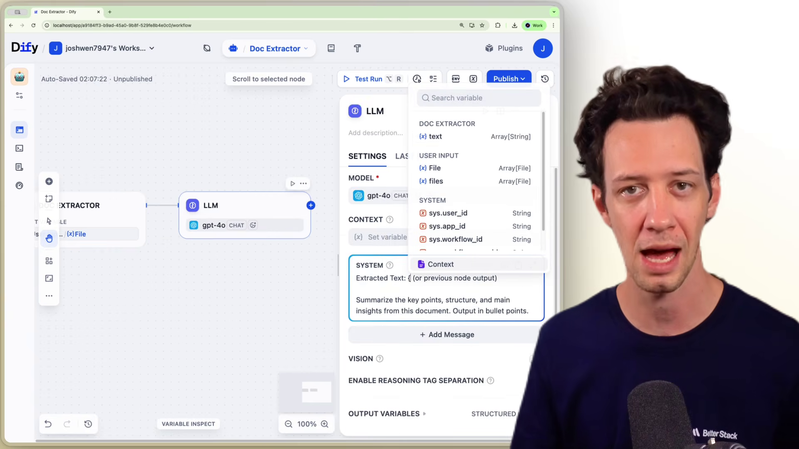
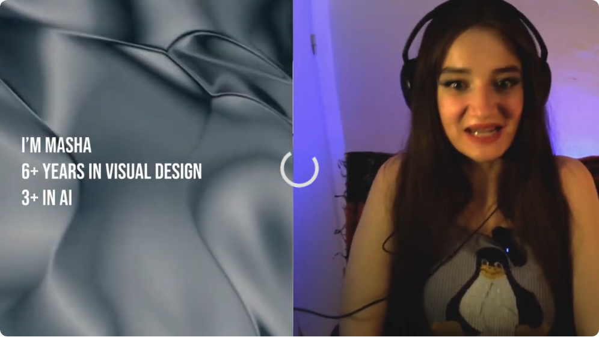
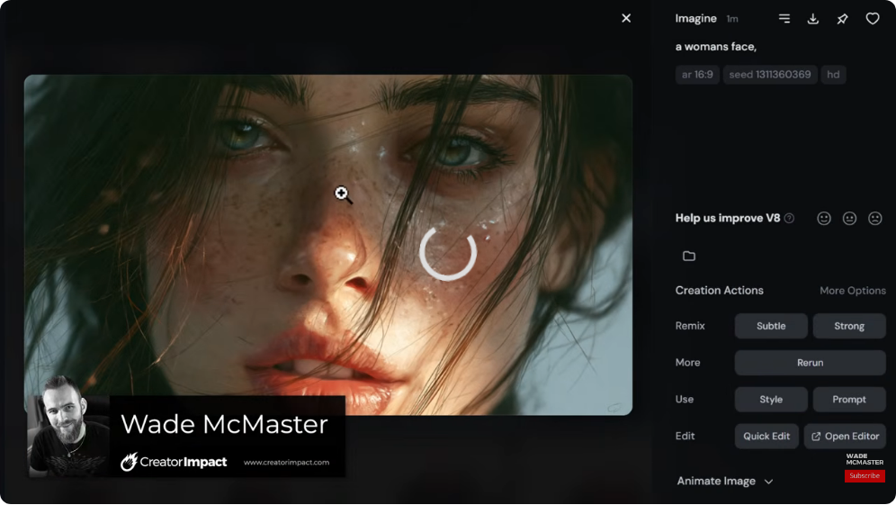
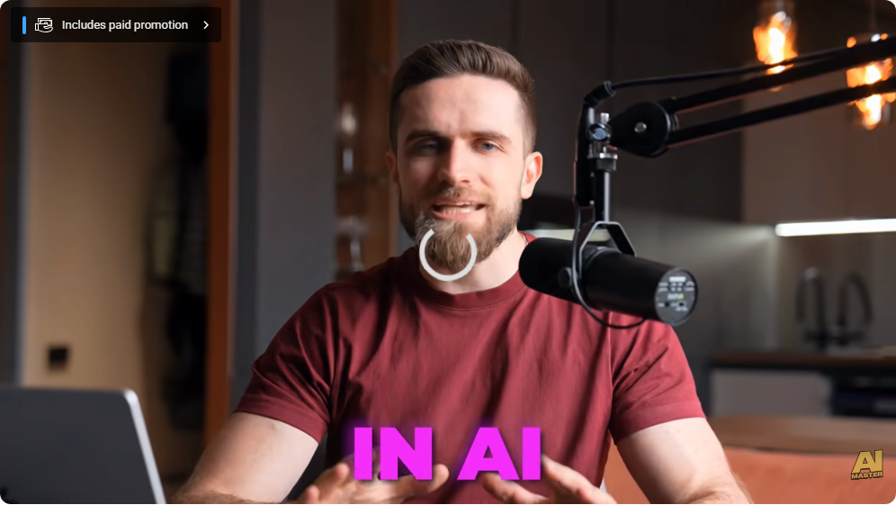
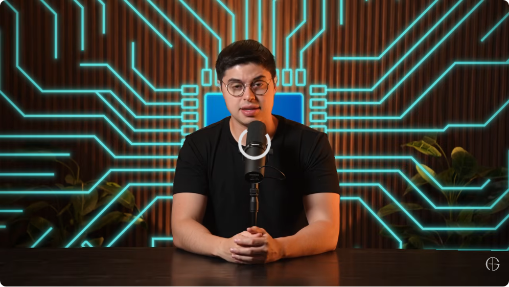
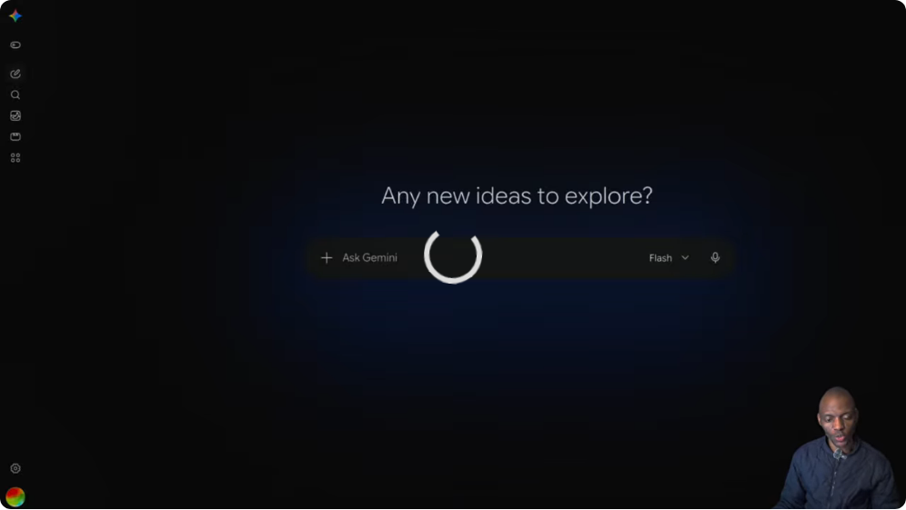

PASS: dify, midjourney, gemini
FAIL: stable-diffusion (intro screen), chatgpt (host talking), claude (host talking)
Note: Failed videos need different timestamps or alternative videos. Per rules, after 2 failed retries we skip and record.

Real Dify workspace - workflow editor with LLM node config, variable panel
File: dify.png (1158KB)

FAIL - video intro screen (host talking, not SD UI)
File: stable-diffusion.png (400KB)

Real Midjourney V8.2 - image generation, prompt, action buttons
File: midjourney.png (395KB)

FAIL - host talking into mic, not ChatGPT UI
File: chatgpt.png (462KB)

FAIL - host talking, not Claude UI
File: claude.png (613KB)

Real Gemini UI - home screen, Ask Gemini input, Flash model
File: gemini.png (66KB)